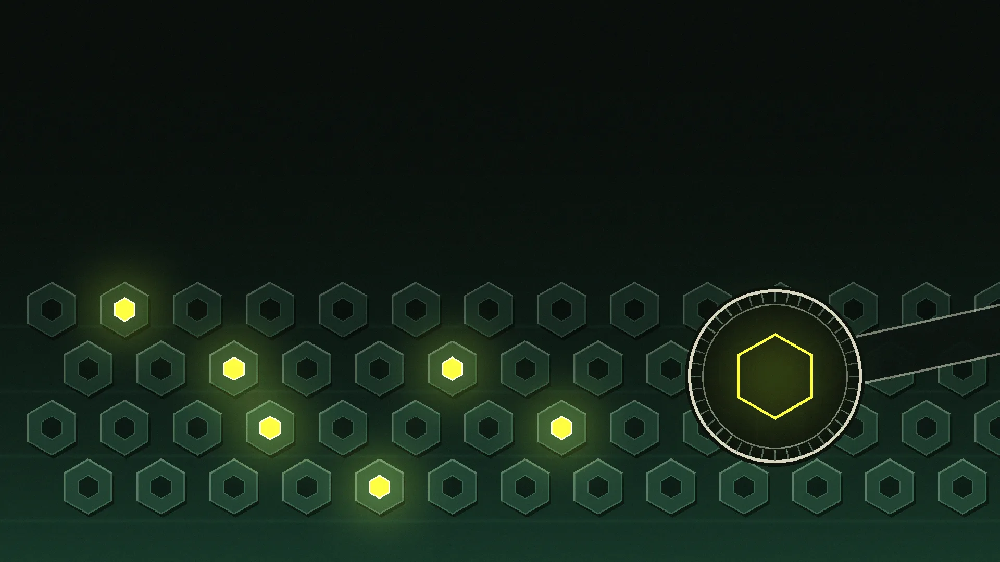

The Engine Under the Bonnet: AI Models v Public Detector Dilemma
Exploring AI's version of prohibition, the mechanics of cryptographic keys, and how everyday users can avoid the AI proofreading trap.

Right now, the tech world is panicking over a problem that sounds incredibly complicated, but is actually a lot like fixing cars. The European Union has just rolled out the AI Act, effectively launching AI's version of prohibition.
The lawmakers have demanded that all AI-generated text must carry an invisible watermark so the public can tell what is written by a machine and what is written by a human. But there is a massive spanner in the works that could turn everyday internet users into collateral damage.
Let's break down exactly how this works, why it's going wrong, and why the tech giants are terrified of a digital black market.
The Engine Rebuild and the "Green List"
When an AI writes an article, it doesn't hide secret code, weird fonts, or random trigger words in the text. That would be like painting a giant yellow stripe down the side of a stolen car: anyone could spot it and paint over it in five minutes.
Instead, AI uses something called a green list.
Imagine you are rebuilding an engine. You have a massive toolbox. Normally, you just grab whichever 10mm spanner is closest and does the job. But what if the garage manager gave you a secret "green list" of specific tools to use in a very specific, mathematically calculated order?
To the customer driving it away, the engine looks normal and runs perfectly. But if another mechanic opens the bonnet and knows your secret green list, they'll look at the exact pattern of the bolts and say, "Ah, a machine built this."
The AI does the exact same thing with words. Instead of picking any word that makes sense, it secretly favours a hidden list of words in a specific pattern.
It leaves a statistical fingerprint rather than a visible mark.
What is a Cryptographic Key?
So, how does anyone know which words are on the green list? They need a cryptographic key.
In plain English, a cryptographic key is simply a highly complex, digital master password. Think of it like the master locking wheel nut key that fits a very specific, uncrackable pattern on a set of alloy wheels. Or the manufacturer's official diagnostic computer that plugs into the OBD2 port to talk to a car's immobiliser.
Without this key, the AI's writing just looks like standard English. The pattern is completely invisible to the naked eye. But the moment you plug the cryptographic key into detection software, the hidden pattern of the "green list" lights up like a fault code on a dashboard.
The AI Models v Public Detector Dilemma
Here is where the whole system hits a brick wall. This is the AI Models v Public Detector Dilemma.
If governments, schools, and the public want to actually verify if an email or an invoice was written by an AI, the tech companies have to give them the cryptographic key.
But handing out that master key is a disaster waiting to happen. The second you give the master diagnostic key to the public, it will inevitably leak to the black market. Once that key is out there, it becomes the ultimate tool for digital "chop shops":
- Surgical Scrubbing (The Chop Shop): If a hacker has the key, they know exactly which words are on the secret green list. They can build a quick programme to swap out just enough of those words with synonyms, completely scrubbing the watermark and bypassing the MOT.
- Spoofing (Framing the Innocent): This is the real danger. If you have the key, you can reverse-engineer the engine. A malicious actor could write a highly illegal or scam email, use the stolen key to inject the AI's exact green list pattern into the text, and successfully frame the AI company (or an innocent business) for writing it.
The Final Challenge
We are staring down the barrel of a massive technological standoff.
The regulators have demanded that every AI leaves a fingerprint to keep us safe, but the tech companies know that handing over the magnifying glass means handing over the blueprint to the vault.
It is a terrifying prospect for the average business owner. Until someone figures out how to let the public check the oil without giving them the keys to the car, this invisible watermark remains a brilliant piece of engineering locked inside a garage that nobody is allowed to enter. Are we ready for a digital world where proving you wrote your own words requires a master key that doesn't exist yet?
The watermark is not the risk. The key is the risk, and whoever holds it can forge as easily as they can find.
This is the follow up. Read the original first.
Issue 017 is the piece 017a is explaining: what Anthropic actually shipped, why publishing the detector is a fork with two bad prongs, what the spoofing attack costs to run, and the four position vocabulary for describing who really did the work.